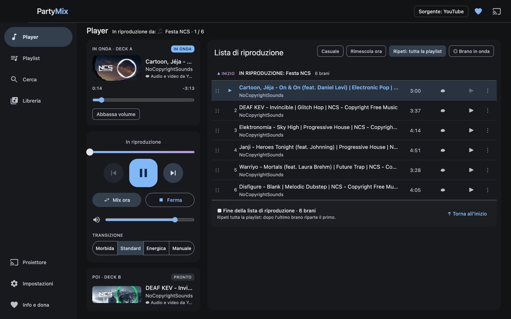
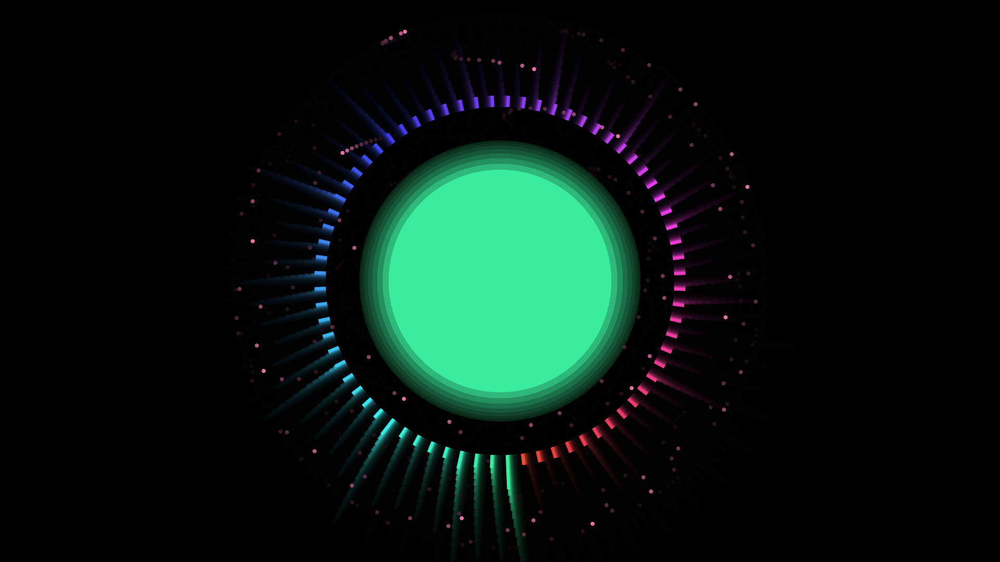
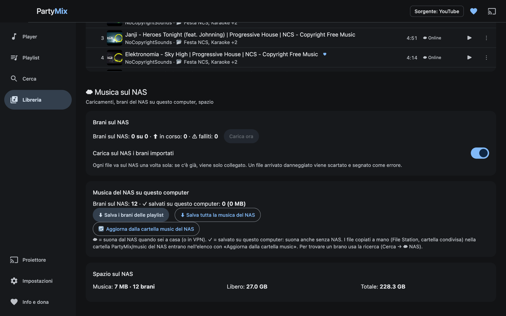
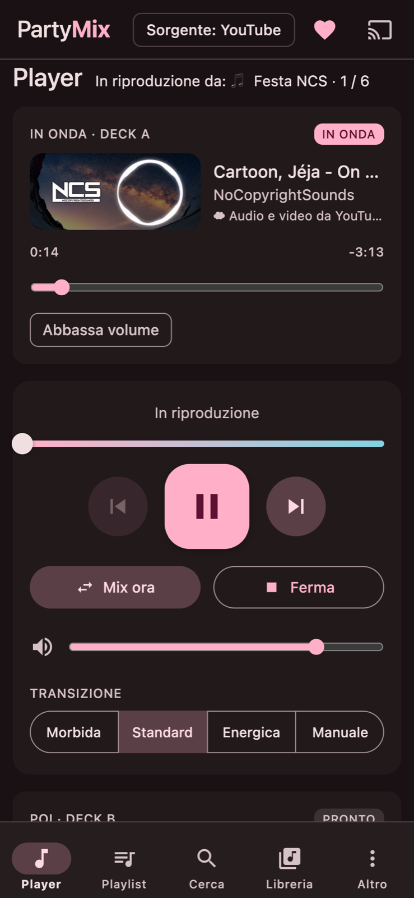
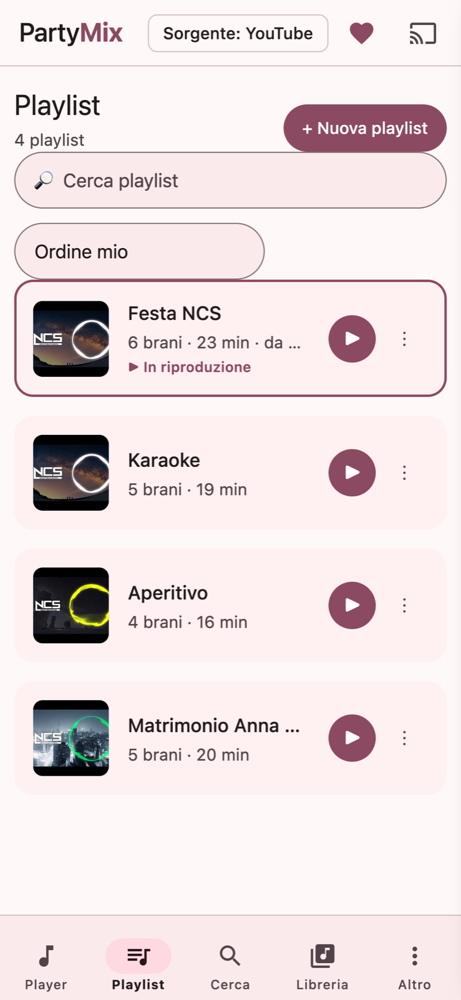
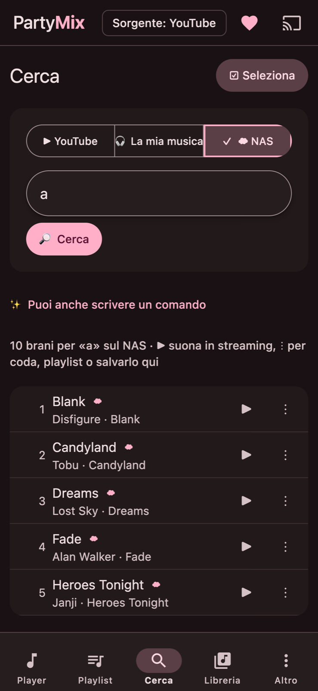
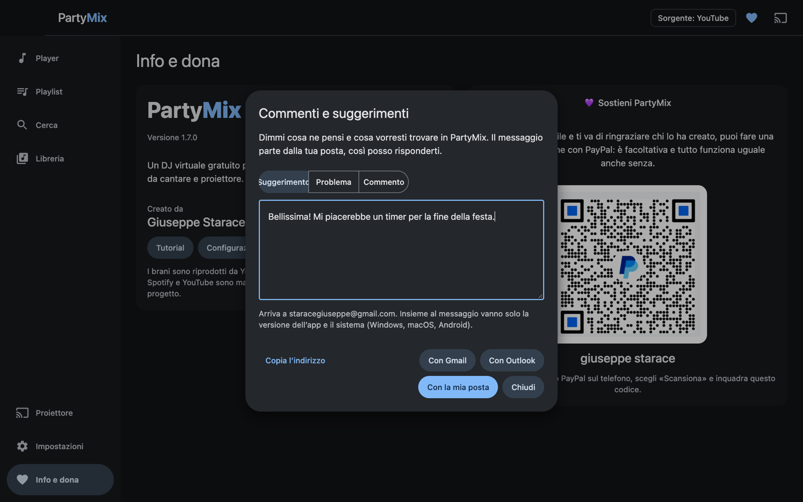

Il DJ virtuale per le tue feste
Incolli una playlist YouTube o Spotify, premi un tasto e la musica va avanti da sola: sfumature tra i brani, testi da cantare e un proiettore che balla con voi.
Nessun account, nessuna pubblicità nell'app. Le app non sono firmate a pagamento: al primo avvio il sistema mostra un avviso, ecco come procedere.

Tutto quello che serve per far ballare
Pensato per chi organizza: niente da configurare, niente silenzi imbarazzanti tra un brano e l'altro.
Mix automatico a due deck
Il brano successivo è già pronto sull'altro deck e il passaggio parte da solo, con sfumatura morbida, standard o energica.
YouTube e Spotify
Playlist YouTube, oppure playlist e album Spotify pubblici: PartyMix prende l'elenco e suona i brani da YouTube.
Tutte le playlist che vuoi
Nessun limite: «Festa», «Karaoke», «Just Dance»… Crea, rinomina, duplica, cerca e ordina. Togli brani, cambia ordine: resta tutto salvato.
La tua musica, anche offline
Sul computer importi i tuoi MP3 (anche cartelle intere) nella libreria: suonano senza rete. Cerchi un brano tra migliaia e vedi in quali playlist e cartella si trova.
Cerca su YouTube
Scrivi titolo e artista: lo suoni subito, lo metti in coda o lo aggiungi a una playlist. Oppure scrivi un comando in italiano: «metti in coda 10 canzoni anni 80».
Il NAS di casa
Stessa musica e stesse playlist su computer e telefono, aggiornate in tempo reale. Ascolti in streaming dal NAS e salvi i brani sul telefono per quando sei fuori.
Karaoke automatico
Cerca in sottofondo i testi di tutta la playlist e li mostra a tempo, con le parole che si illuminano. O senza, se preferisci.
Proiettore
Forme che seguono la musica con il testo da cantare, oppure il video YouTube in grande per i balli di gruppo, senza buchi neri tra un brano e l'altro.
Cast da Android
Il telefono fa da console e trasmette il proiettore a una TV o a un proiettore con schermo wireless.
Pubblicità più sopportabili
Può abbassare da solo il volume quando sente parlare come in uno spot, e saltare le clip troppo brevi.
Leggera e gratuita
Pochi MB, nessun account, niente scaricato sul disco: la musica arriva in streaming dai player ufficiali di YouTube.

Il proiettore che balla con voi
Apri il proiettore sul secondo schermo, sulla TV o sul proiettore della sala e scegli cosa mostrare:
- Karaoke: forme colorate che seguono il suono della stanza, con il testo da cantare.
- Video YouTube: il video del brano in onda a tutto schermo, muto e allineato alla musica. Perfetto per i balli tipo Just Dance.
- Il video successivo è già caricato: al cambio brano non si vede mai lo schermo nero.

Il NAS di casa al centro
Installi il piccolo server di PartyMix sul NAS (anche un Synology senza Docker) e colleghi computer e telefono:
- Playlist uguali ovunque: una modifica sul telefono compare sul computer in un attimo, e viceversa. Senza NAS le modifiche aspettano.
- La tua musica sul NAS: la carichi una volta, con una barra per ogni file; i file copiati a mano nella cartella del NAS entrano con un tocco.
- Cerca → ☁ NAS: trovi un brano tra migliaia e lo ascolti subito in streaming, oppure lo salvi sul telefono per quando sei fuori casa.
- Solo nella rete di casa (o in VPN): nessuna porta da aprire, un accesso per ogni dispositivo, revocabile.
Sul telefono, le stesse pagine
Player, Playlist, Cerca e Libreria come sul computer, con la barra in basso e i colori del tuo telefono (chiaro, scuro, Material You).



Pronti in un minuto
Al primo avvio una configurazione guidata ti accompagna passo passo.
Incolla una playlist YouTube o Spotify e premi «Carica playlist».
Premi ▶ Avvia automix. I brani si susseguono con le sfumature, da soli.
Apri il proiettore e scegli karaoke o video: si canta e si balla.
Dimmi cosa ne pensi
PartyMix cresce con i suggerimenti di chi lo usa. Nell'app premi 💬 Commenti: scrivi cosa ti piace, cosa manca o cosa non va, e il messaggio parte dalla tua posta, così posso risponderti.
PartyMix è gratuito e lo resta. Se ti ha fatto ballare e cantare, un piccolo contributo, del tutto facoltativo, aiuta a portare avanti nuove funzioni e aggiornamenti.
Inquadra il codice con l'app PayPal oppure tocca qui dal telefono. Grazie! 💜

La prossima festa la fa PartyMix
Gratis, per macOS, Windows, Linux e Android. 📖 Leggi la guida con le schermate